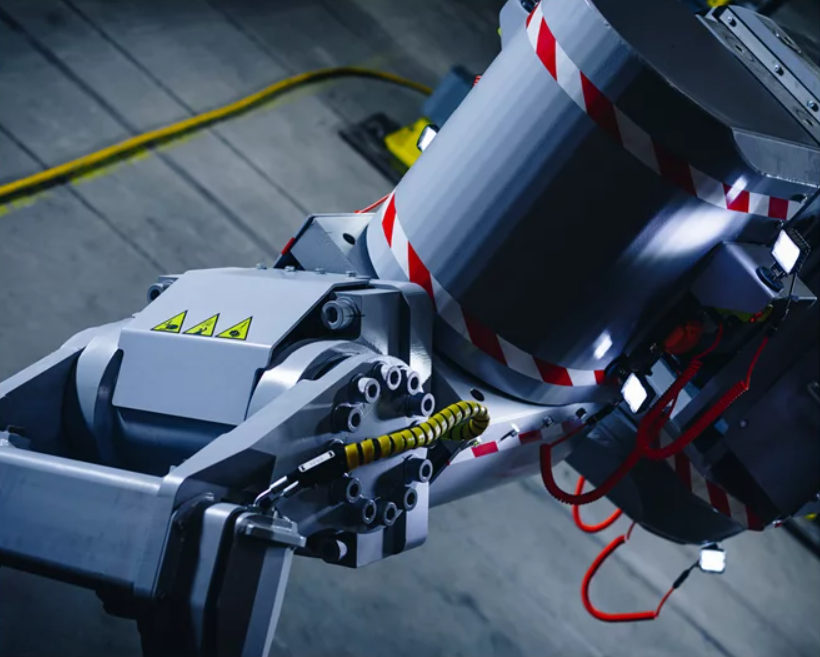

Design · FEA
Client Anonymised
Mining & Heavy Industry
Mill Reline Machine Design
Complete structural and mechanical design of a range of Grinding Mill Reline Machines for a multinational mining equipment supplier.